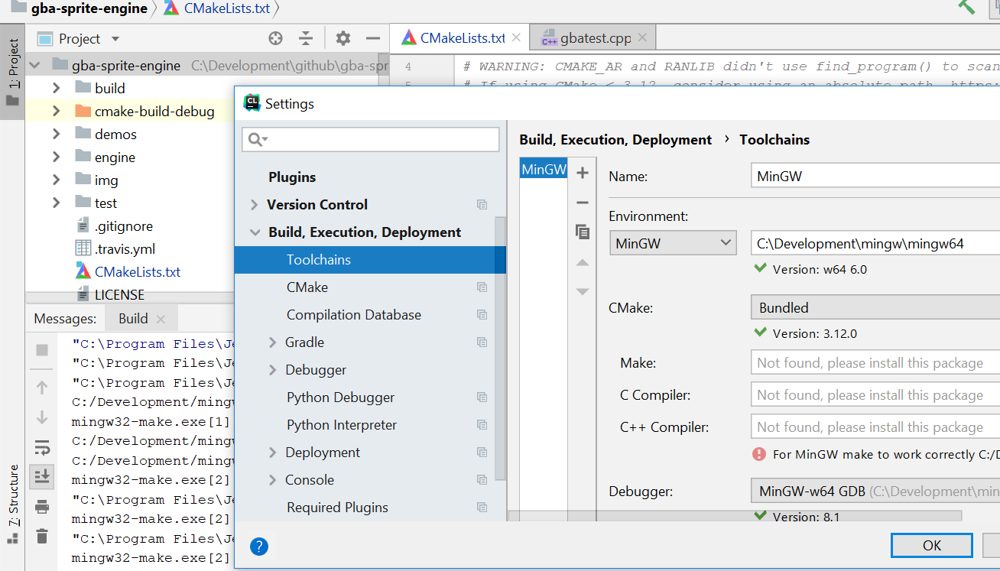

Onderstaande instructies gaan uit van Ubuntu als besturingssysteem. Windows of OSX is ook mogelijk, alle tools zijn platformonafhankelijk. Voor Windows installeer je MinGW 64 als compiler toolchain.
De volgende tools worden verwacht geïnstalleerd te worden via de package tool apt-get bij Ubuntu:
Optionele editors (VSCode, Subl) zijn ook via de package tool te installeren. sublime-text (vereist toevoegen van een repository).
De volgende tools worden verwacht gedownload te worden via git:
De volgende tools worden verwacht manueel te downloaden:
CLion is gratis voor studenten: registreet je via de JetBrains Student pagina met je studenten e-mail adres om een licentiesleutel toegestuurd te krijgen.
Download en installeer MinGW 64. Cygwin geeft problemen met UNIX paden en de cross compiler! In Cygwin stelt de windows dir C:\Development\github bijvoorbeeld /cygdrive/c/Development/github voor. Die forward slashes gecombineerd met de cygdrive prefix kan de GBA cross-compiler niet interpreteren.
mingw-w64-install.exeStart MinGW met de shortcut die geplaatst werd in je destination folder. Daarna kan je je installatie valideren met het commando gcc -v in de geopende terminal.
Opgelet voor mensen die switchen van Cygwin naar MinGW: de bin folder van je Cygwin installatie mag niet toegevoegd zijn aan %PATH%. Je krijgt dan de volgende foutboodschap:
sh.exe was found in your PATH, here: C:/Program Files/Git/user/bin/sh.exe For MinGW make to work correctly sh.exe must NOT be in your path.
Verwijder je oude Cygwin %PATH% variabele via start - “Omgevingsvariabelen voor uw account bewerken” - zoek “Path” in de lijst, klik op Bewerken - verwijder de referentie naar je Cygwin pad.
Ga naar bestand - settings - klik op “Build, Execution, Deployment” - klik op Toolchains:

Kies in de “Environment” dropdown voor “MinGW” en zet het pad juist naar je installatie folder van MinGW64. Merk op dat onder “C++ Compiler” Een foutboodschap kan verschijnen “For MinGW make to work correctly…” - dit mag je negeren. De C en C++ compilers zelf mag je leeg laten en komen van de CMake instellingen.
Vanaf dan zal CLion bij het builden de MinGW omgeving gebruiken om CMake en Make uit te voeren.
Geen speciale actie vereist, compiler built-in.
Installeer de XCode toolchain via de Mac Appstore. Daarna kan je je installatie valideren met gcc -v.
Opgelet Wij hebben CMake 3.12 of recenter nodig. Deze versie komt reeds bij CLion 2018.1 of later. Dat betekent dat als je een recente versie van CLion installeert, je CMake niet meer manueel hoeft te installeren! Sla onderstaande stappen dus over indien je CLion installatie recent genoeg is.
Voor OSX via Homebrew: brew install cmake.
Ubuntu’s apt-get package manager heeft niet altijd de laatste versie van CMake in zijn repository - wij moeten 3.12 of hoger hebben. Als alternatief kan je op https://cmake.org/download/ de binaries downloaden (shellscript) en dit “ergens” installeren. Aangeraden is een $CMAKE_HOME omgevingsvariabele te maken en die toe te voegen aan je $PATH. In CLion kan je via CLion settings (File - Settings - Build, Execution, Deployment, Toolchains) een andere CMake executable kiezen.
Voor Windows is er een installer voorzien. De 64-BIT installer is hier te downloaden: https://cmake.org/download/ - wij moeten 3.12 of hoger hebben. Aangeraden is een %CMAKE_HOME% omgevingsvariabele te maken.
Het kan zijn dat cmake niet voldoende is of je compilers niet kan vinden maar de VC++ versie probeert (nmake, cl). In dat geval cmake -G "Unix Makefiles" -DCMAKE_SH="CMAKE_SH-NOTFOUND" als commando hanteren. Als er tijdens het compileren iets misloopt, controleer dan even in het gegenereerde CMakeCache.txt bestand of CMake de juiste compilers gevonden heeft.
Deze stappen zijn onafhankelijk van je gekozen besturingssysteem, zodra je de basis gcc toolchain én CMake gecompileerd hebt.
Volg de volgende stappen nadat je de release 1.10.x downloadde via https://github.com/google/googletest
cd googletest/googletest (opgelet dus NIET de root, we moeten googlemock niet hebben)mkdir build in de map googletestcd build && cmake ./../. -G optie mee te geven (zie boven)make. Dit geeft libgtest.a en libgtest_main.ainclude_directories()target_link_libraries()GTEST_DIR.De “DevkitPro” toolchain installeren levert je een aantal cross-compilers en linkers op die een C source file omzetten ine en GBA binary. Zie installatie instructies per OS. Via de meegeleverde package manager pacman kan je op OSX de package gba-dev installeren.
Voor Windows is er een installer voorzien. Vink enkel als “components to install” GBA development aan. Er is 300MB voor nodig omdat er weer een virtuele omgeving voor bij komt (msys).
Vergeet geen omgevingsvariabele %DEVKITPATH% aan te maken en deze toe te voegen aan je %PATH%; zie verder.
Voor Ubuntu moet je eerst de devkitpro-pacman .deb file installeren die je hier op Github kan vinden. Het pacman commando is dan het dkp-pacman commando om verwarring met apt te vermijden. Installeer alle gba dev tools met sudo dkp-pacman -S gba-dev. De compilers zijn dan geïnstalleerd in /opt/devkitpro/devkitARM/bin dus voeg die folder toe aan je $PATH.
In je .bashrc bestand in de home folder ~ voeg je het volgende toe:
export DEVKITPATH="/opt/devkitpro/devkitARM/bin" export CMAKE_HOME="/opt/cmake-3.12.1-Linux-x86_64" export GTEST_DIR="/home/wouter/Development/googletest/googletest" PATH="$DEVKITPATH:$CMAKE_HOME/bin:$PATH"
Bovenstaande variabelen worden onder andere verwacht aanwezig te zijn op systeem niveau in de gba sprite engine. Voor windows pas je dit aan in het “System Configuration” scherm en klik je op “Environment Variables” om wijzigingen door te voeren (admin rechten vereist).
Onderstaande filmpjes verduidelijken de installatieinstructies voor Windows 10 gebruikers.
De gba-sprite-engine compileren op Win10:
Bovenstaande instructies raken ook kort MinGW en CMake aan.
De google-test library compileren op Win10:
Vergeet niet dat in Windows $PATH gelijk gesteld is aan %PATH%!
Lukt het nog steeds niet? Controleer dan de FAQs.